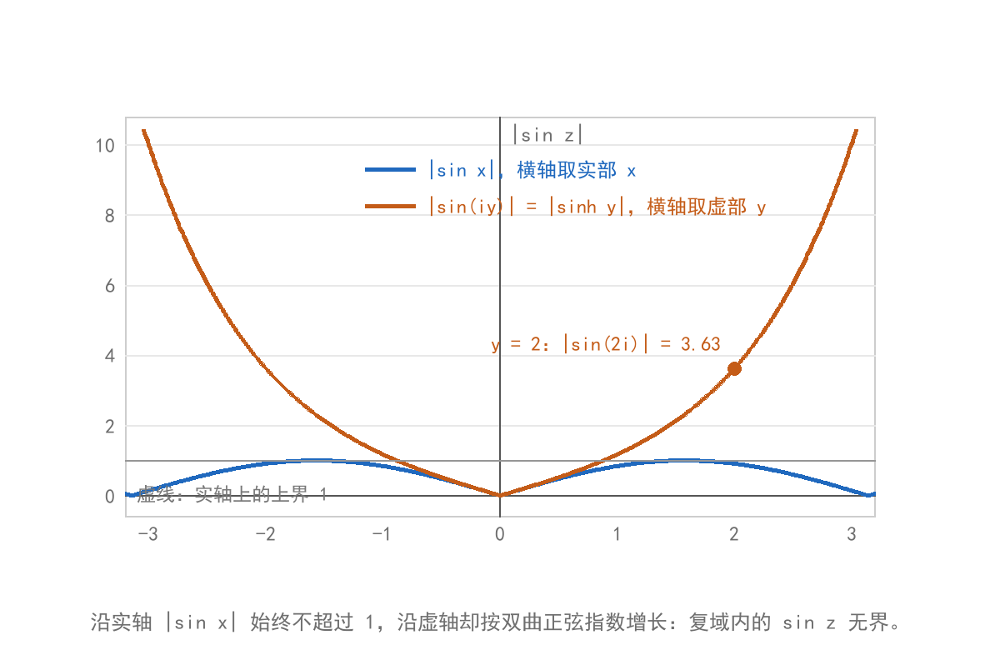
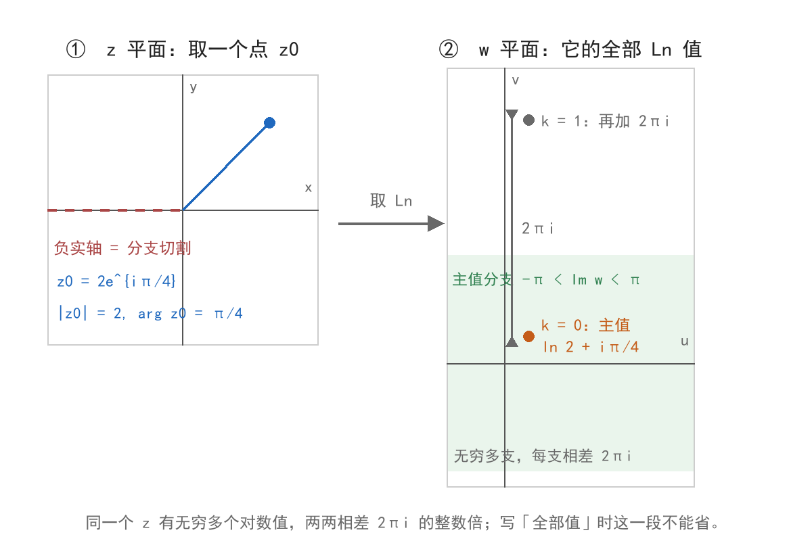
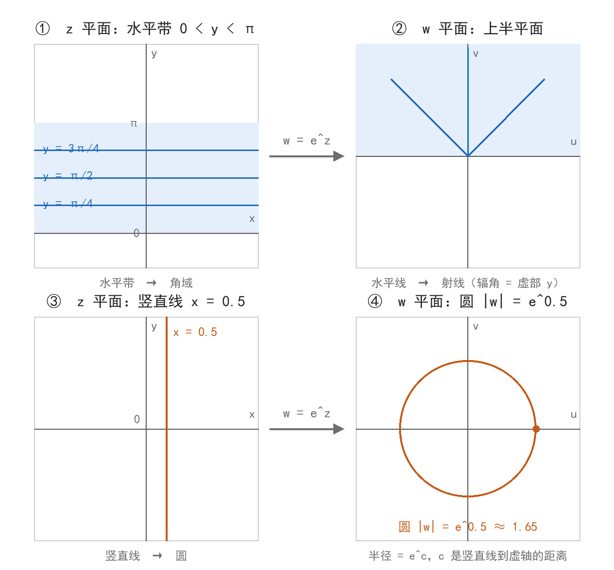

初等函数：指数、三角与对数
本节目标：能算出 e^z、\operatorname{Ln} z 与 z^\alpha 的值，并说清其中的多值性、全部值怎么写。
卷面考哪些
公开试卷里，本节固定出现在两处：
- 解答题第 2 题（6 分）：解 \sin z = 2\cos z、\cos z = \frac{5}{4} 这一类的三角方程，或者求 \operatorname{Ln}(1+\sqrt3 i) 的值。
- 填空与选择（3～4 分）：判断某条等式在复数范围内是否成立、求 i^i 一类幂的值、比较 f(z)=\sin z 与 g(x)=\sin x 的性质异同（概念简答，3 分）。
这一节的分数都落在「按定义代进去算」上：定义写对、多值性不漏，就是满分卷面。
指数函数
先接一句级数。实变量上有 e^x = 1 + x + \frac{x^2}{2!} + \cdots，把 x 换成复数 z 之后这个幂级数在整个复平面上仍然收敛，所以 e^z 可以按同一串幂写开。教材采用的是与它等价的写法：
取 x = 0 就得到欧拉公式 e^{iy} = \cos y + i \sin y；把 z 写成指数表示 z = re^{i\theta} 时用的正是这一条，其中 r = |z| 是模，\theta = \arg z 是辐角，落在 (-\pi,\pi] 内的那个值叫主值，记 \operatorname{Arg} z。
e^z 的结论都从上面那个式子直接读出来：
| 问的 | 答 |
|---|---|
| 模 | |e^z| = e^x，只由实部决定 |
| 辐角 | \arg e^z = y + 2k\pi，k \in \mathbb Z |
| 周期 | e^{z+2\pi i} = e^z，周期为 2\pi i |
| 取值 | 永不为零，因为 e^x > 0 |
| 乘法 | e^{z_1}e^{z_2} = e^{z_1+z_2} |
例：e^{1+i} = e(\cos 1 + i\sin 1) \approx 1.4687 + 2.2874i，模是 e \approx 2.7183，辐角是 1 + 2k\pi。
「永不为零」与「以 2\pi i 为周期」这两条合起来说明：w = e^z 的取值里没有 0，而每个不为零的 w 都有无穷多个原像。后面 \operatorname{Ln} z 的多值性就从这里来。
三角与双曲函数
由 e^{iz} 与 e^{-iz} 联立解出 \sin z 与 \cos z，得到它们在复数范围内的定义：
双曲函数写法相近：
两组之间的关系是 \sin iz = i\sinh z、\cos iz = \cosh z。
照原样继承下来的部分：\sin^2 z + \cos^2 z = 1、和差角公式、周期 2\pi、零点 z = k\pi（\sin z）与 z = \frac{\pi}{2} + k\pi（\cos z）。
改变的一条必须记住：实轴上 |\sin x| \le 1 恒成立，复数范围内不再有界。取 z = iy，由 \sin(iy) = i\sinh y 得 |\sin(iy)| = |\sinh y|，|y| 增大时按指数增长：y = 2 时已是 3.63，y = 3 时超过 10。同一个事实也说明 \sin z = 3 这类方程在复数范围内有解，第 7 节就要解它。

assets/img/gen/初等函数-三角函数-无界性-本机-03.py），许可：本项目自产）2022 与 2024 年各有一道 3 分简答，要求写 f(z) = \sin z 与 g(x) = \sin x 的异同，其中最好拿分的一条就是 \sin z 无界、\sin x 有界。2025 年的选择题又把 \cos 2z + \sin^2 z = 1 当干扰项：成立的是 \cos^2 z + \sin^2 z = 1 与 \cos 2z = 1 - 2\sin^2 z，两条拼在一起就不成立。
对数函数
\operatorname{Ln} z 定义为方程 e^w = z 的解 w。把 z 写成指数表示 z = re^{i\theta}，令 w = u + iv 代入，比较模与辐角得 e^u = r、v = \theta + 2k\pi，于是
把辐角限制在 (-\pi,\pi] 得到的那个值叫主值，记 \ln z = \ln|z| + i\operatorname{Arg} z。\ln|z| 是正实数的自然对数，与多值无关；多值性全部来自辐角那一项。
两个例子：
- \operatorname{Ln}(-1) = \ln 1 + i(\pi + 2k\pi) = (2k+1)\pi i，主值 \ln(-1) = \pi i。
- \operatorname{Ln}(1+\sqrt3 i)：|z| = 2、\operatorname{Arg} z = \frac{\pi}{3}，所以 \operatorname{Ln}(1+\sqrt3 i) = \ln 2 + i\left(\frac{\pi}{3} + 2k\pi\right)，主值取 k = 0 那一支。这就是解答题第 2 题的一种考法。
动作固定三步：先把 z 化成 re^{i\theta}，再写 \ln r + i\theta，最后补 2k\pi。
同一个 z 的全部对数值相差 2k\pi i，在 w 平面上排成一列；主值只是其中一支。

assets/img/gen/初等函数-对数函数-多值分支-本机-02.py），许可：本项目自产）两条运算要分清，选择题的原题就出在这里：
- \operatorname{Ln}(z_1z_2) = \operatorname{Ln} z_1 + \operatorname{Ln} z_2 成立，两边都是值的集合，逐项加起来对得上。
- \operatorname{Arg}(z_1z_2) = \operatorname{Arg} z_1 + \operatorname{Arg} z_2 一般不成立：主值被压在 (-\pi,\pi] 内，两角相加越界就要减去或加上 2\pi。
主值分支 \ln z 在去掉原点与负实轴的区域内是单值且连续的，负实轴就是把两支接起来的地方（上面那张图里的虚线）。后面讨论解析性时，\operatorname{Ln} z 都要先指定到这样一条分支上。
幂函数
z^\alpha = e^{\alpha \operatorname{Ln} z}，\alpha 为复常数，z \ne 0。右端含 \operatorname{Ln} z，所以 z^\alpha 取几个值由 \alpha 决定：
| \alpha 是哪类数 | 值的情况 | 例 |
|---|---|---|
| 整数 | 单值 | z^2、z^{-1} |
| 有理数 p/q（既约，q > 1） | 恰 q 个值 | z^{1/3} 三个、z^{2/3} 三个 |
| 无理数或复数 | 无穷多值 | i^i、z^{\sqrt2} |
z^{1/n} 就是 n 次方根，公式为
n 个值均匀分布在以原点为心、半径 \sqrt[n]{r} 的圆上。
两个必会：
- (-1)^{1/3} = e^{\frac{1}{3}\operatorname{Ln}(-1)} = e^{\frac{(2k+1)\pi}{3}i}，取 k = 0,1,2 得 \frac{1}{2} + \frac{\sqrt3}{2}i、-1、\frac{1}{2} - \frac{\sqrt3}{2}i。k 再往上取就与这三个重复，所以恰三个值。
- i^i = e^{i\operatorname{Ln} i} = e^{i\left(\frac{\pi}{2} + 2k\pi\right)i} = e^{-\frac{\pi}{2} - 2k\pi}，k \in \mathbb Z。全部值是无穷多个实数，主值 e^{-\pi/2} \approx 0.2079。
算 z^\alpha 时先把 \alpha \operatorname{Ln} z 完整写出来（含 2k\pi）再取指数；模由实部决定，|z^\alpha| = e^{\operatorname{Re}(\alpha \operatorname{Ln} z)}。
映照特点
把 w = e^z 拆成模与辐角两条对照着看，z = x + iy：
于是：
- 水平带 0 < y < 2\pi 映成 w 平面上去掉正实轴的整个区域；y 在像平面里充当辐角，从 0 走到 2\pi 正好绕原点一周。
- 水平线 y = c（0 < c < 2\pi）映成射线 \arg w = c。
- 竖直线 x = c 映成圆 |w| = e^c，竖直线越靠右，圆越大。
换到幂函数一侧，w = z^n 把角域 0 < \arg z < \theta 张成 0 < \arg w < n\theta：角度放大 n 倍，模变成 r^n；w = z^{1/n} 反过来把角域缩成原来的 1/n。

assets/img/gen/初等函数-指数函数-映照特点-本机-01.py），许可：本项目自产）前面讲主值分支时那张图里的浅色带，对应的正是竖直带 -\pi < y < \pi：把这个带映过去得到 w 平面去掉负实轴的区域，\ln z 就单值地落在带内。
这两条是实验三「保角映射的网格实验」要画的东西：方格纸按 w = e^z 与 w = z^2 变形之后，格子会弯、会拉伸，交角仍是直角。填空里问「指数函数把水平带映成什么」，答案就是第一条。
解三角方程的套路
解答题第 2 题的标准动作有五步：
- 用 e^{iz} 写出题面里的 \sin z 或 \cos z。
- 两边乘开，整理成 e^{iz} 的二次方程。
- 解出 e^{iz}，两根都留。
- 取对数：e^{iz} = t 时 iz = \operatorname{Ln} t，把 2k\pi i 写进去。
- 除以 i 化简，结论后挂 k \in \mathbb Z。
以 \sin z = 2\cos z 为例（2022 年原题，6 分）：
右端的模为 1，辐角为 \pi - \arctan\frac{4}{3}，所以
参考答案把最后这个式子写成 \arctan 2 + k\pi，两者是同一个数。
这一题的给分来自参考答案：化成 e^{2iz} 得 3 分，取对数写出 2k\pi 得 1 分，结论带 k \in \mathbb Z 得 2 分，旁边注着「只有主值得 1 分」。
另一类方程：\cos z = \frac{5}{4} 整理得 t^2 - \frac{5}{2}t + 1 = 0（t = e^{iz}），解出 t = 2 或 t = \frac{1}{2}，取对数得 iz = \ln 2 + 2k\pi i 或 iz = -\ln 2 + 2k\pi i，所以 z = 2k\pi \pm i\ln 2，k \in \mathbb Z。
一是漏掉 k\pi 或 2k\pi，二是把 \operatorname{Ln} 当单值用。这类方程的解有无穷多个，卷面上不写 k \in \mathbb Z，参考答案按「只有主值」处理，直接丢两分。
练习：三组换算
Python 标准库 cmath 提供复数的指数与对数，cmath.log 只返回主值。四条命令各对应本节一个结论，跑之前先按公式手算一遍。
import cmath
print(cmath.exp(1 + 1j)) # e^{1+i}
print(cmath.exp(1 + 1j + 2j * cmath.pi)) # 再加一个 2πi
print(cmath.log(-1)) # Ln(-1) 的主值
print(cmath.exp(1j * cmath.log(1j))) # i^i 的主值- 第 1 条打出
1.4686939399158851+2.2873552871788423j：实部是 e\cos 1，虚部是 e\sin 1，模等于 e，与前面指数函数那张表对得上。 - 第 2 条与第 1 条数值相同，末位可能差一两位，那是浮点舍入；这就是 2\pi i 周期。
- 第 3 条打出
3.141592653589793j：库里只有主值 \pi i，卷面要写 (2k+1)\pi i。 - 第 4 条打出
0.20787957635076193+0j：这就是 i^i 的主值 e^{-\pi/2}，全部值再乘 e^{-2k\pi}。
本机没有 Python 时，按同样三组数（e^{1+i}、\operatorname{Ln}(-1)、i^i）在纸上算一遍，与上面的输出对照。
带走的公式卡
| 函数 | 定义 | 多值性 | 卷面考点 |
|---|---|---|---|
| e^z | e^x(\cos y + i\sin y) | 单值，周期 2\pi i，不为零 | 求模与辐角、周期 |
| \sin z,\ \cos z | 用 e^{iz} 与 e^{-iz} 表出 | 单值，周期 2\pi，无界 | 有界性、解三角方程 |
| \operatorname{Ln} z | \ln|z| + i(\operatorname{Arg} z + 2k\pi) | 无穷多值 | 写全部值与主值 |
| z^\alpha | e^{\alpha \operatorname{Ln} z} | 整数单值，p/q 有 q 个，其它无穷多 | i^i、方根 |
- 李君、于非非《复变函数与积分变换》§1.3 初等函数
- 合肥工业大学期末试卷（含答案与逐题分值）